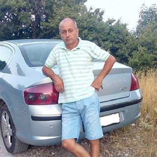
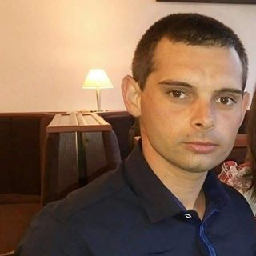

'Modalitățile de a scăpa de durerile articulare provoacă doar nedumerirea'. Celebrul reumatolog japonez a dat un interviu sincer publicației
Dr. Yoshinori Ohsumi— profesor la Universitatea de Medicină din Tokyo, laureat al Premiului Nobel pentru medicină. A primit Premiul Nobel pentru descoperirea mecanismului autofagiei - tratamentul și întinerirea corpului la nivel celular.
Anul trecut, Yoshinori Ohsumi a venit în Europa pentru a studia experiența colegilor săi. Ceea ce a văzut în Europa, a spus el, sfidează logica. În țările europene, potrivit dr. Ohsumi, pur și simplu nu există medicină ca atare....
După discursurile de profil în Japonia, Dr. Ohsumi a fost de acord să ofere un interviu publicației. Ce nu i-a plăcut faimosul doctor în reumatologie? Și de ce el susține că în Europa AR FI IMPOSIBIL SĂ SCAPI DE BOLILE ARTICULARE?
Vorbind în fața jurnaliștilor japonezi, Dvs. ați spus că ceea ce ați văzut în Europa v-a șocat. Puteți comenta acest lucru?
Vreau să spun imediat că am atitudine bună față de Europa, cultura europeană în general și cetățenii săi. Dar starea în care se află medicina provoacă într-adevăr șocul medicilor noștri. Aveți medicina retardată cu cel puțin 20, și poate cu toți 30 de ani. Cel puțin, în domeniul reumatologiei.
Principalele remedii de tratare a articulațiilor - KYTTA-SALBE, ARTHROVITAN și alte medicamente similare
Cu toate acestea, fiecare medic japonez știe că aceste remedii nu tratează bolile articulare! Nu pot face asta! Tot ce pot face este să amelioreze durerea pentru o vreme. Adică, durerea și umflarea trec, o persoană se bucură de recuperare, dar, de fapt, nu se întâmplă schimbări radicale în articulație. Aceasta rămâne la fel de distrus cum a fost înainte. Prin urmare, după un timp începe să doară din nou. Ce fac medicii în acest caz? Ei spun că boala este cronică și nu poate fi complet vindecată.
În Japonia, în general, nu există concepte precum ARTROZA CRONICĂ sau ARTRITA CRONICĂ. De ce? Da, pentru că atât artroza, cât și artrita, ca orice altă boală articulară, răspund la terapie cu succes.
De ce medicii fac asta? În opinia mea, este vorba despre sistemul însuși de medicină. Faptul este că nimeni - nici un medic, nici chiar mai multe rețele farmaceutice - nu este interesat de faptul ca omul să devină complet sănătos. Dimpotrivă, le este benefic ca o persoană să le apeleze din nou și din nou. Dar ceea ce m-a surprins cel mai mult este că la televizor se spune în mod constant despre presupusa mafie de farmacie existentă, că aceasta a ocupat totul. Și în același timp, nimeni nu face nimic cu aceasta. Nimănui nu-i pasă!
Medicii și farmaciștii voștri trag ultimii bani de la pensionari și acest lucru este ceva normal.
Și ce se întâmplă în Japonia cu terapia articulațiilor bolnave?
- Marea majoritate a bolilor articulare cedează cu succes la terapie. Oamenii de știință japonezi și-au dat seama de mult timp că trebuie să eliminăm nu consecințe ale patologiei (durere, limitarea mobilității, inflamații etc.), ci cauze. Adică, să eliminăm ceea ce distruge articulațiile. Iar acestea sunt distruse din cauza deteriorării circulației sanguine, care apare LA TOȚI OAMENII în vârstă.
Uitați, voi încerca să explic în cuvinte simple. Alimentarea cu sânge a articulației începe cu mari trunchiuri arteriale care se află lângă aceasta. Fluxul de sânge, trecând prin ramificațiile vasculare, saturează țesuturile periarticulare. Ramificațiile vasculare sunt capilare mici. Cu vârstă ele se înfundă cu colesterol și sângele nu mai trece prin ele. Ca rezultat, atât alimentarea cu nutrienți în articulație, cât și eliminarea substanțelor inutile din articulații se întrerupe.
 Un exemplu de alimentarea cu sânge a genunchiului
Un exemplu de alimentarea cu sânge a genunchiului
Ca urmare, starea cartilajului se înrăutățește, în acesta începe procesul patologic de uscare, articulația își pierde elasticitatea. Ce se întâmplă în continuare? Și apoi se întâmplă următoarele - lumenul fisurii articulare se îngustează, oasele încep să intre în contact și provoacă frecare. Din aceasta apar criza și blocarea.
Deoarece substanțele prelucrate nu mai sunt excretate din articulație, aceasta este literalmente contaminată, se formează creșteri osoase - osteofite. Creșterea lor rapidă duce la afectarea vaselor de sânge și a terminațiilor nervoase, ceea ce duce la inflamație și durere.
Toate bolile articulare - indiferent de specie și etimologie au o singură cauză - o întrerupere alimentării cu sânge. Acum, gândiți-vă ce trebuie de făcut pentru a restabili articulația? Corect! Să restabilim circulația sângelui.
Din fericire, celulele de țesut cartilaginos au capacitatea de regenerare. Aceasta înseamnă că, dacă creați condiții adecvate (normalizarea circulației sanguine), articulația poate fi restabilită complet. La o persoană trec durere și inflamație. Articulația devine la fel de mobilă ca în tinerețe. PENTRU TOTDEAUNA! O persoană nu va mai trebui să bea analgezice și să aplice unguente. Nu va trebui să vă temeți că orice mișcarea inutilă va duce la dureri groaznice. Oamenii devin complet sănătoși.
- Cum să restabilim circulația sângelui în articulații?
- Astăzi există remedii foarte bune care restabilesc circulația sângelui în articulații. Una dintre substanțele active importante ale acestor medicamente este uleiul din ficat de rechin. Această substanță poate pătrunde în moleculele de colesterol și le distruge din interior. Ca urmare, chiar și capilarele mici sunt curățate.
De exemplu, un remediu foarte bun conceput pentru a îmbunătăți circulația sângelui și pentru a restabili articulațiile este Hondrostrong . În afară de uleiul din ficat de rechin Hondrostrong conține multe alte componente concepute pentru a îmbunătăți funcționalitatea articulațiilor. Nu le voi enumera pe toate, voi enumera doar câteva.
|
Extract de frunze de eucalipt |
Este folosit pentru boli inflamatorii ale articulațiilor, are un efect analgezic, ameliorează inflamația, umflarea, ameliorează durerea de reumatism |
|
Extract de rădăcină de ginseng |
Conține substanțe, similare în compoziție cu cortizonul - un hormon steroid care ameliorează inflamația. Reduce semnificativ durerile articulare. |
|
Extract de propolis |
Are un efect pronunțat local analgezic și antiinflamator. |
|
Mentol |
Elimină eficient inflamația, reduce rapid durerea și permite ameliorarea umflăturilor în foarte scurt timp |
|
Extract de frunze de tătăneasă |
Datorită principalei substanțe active, alantoina, regenerarea țesutului osos este accelerată, circulația sângelui este restabilită, structura oaselor, ligamentelor și tendoanelor este întărită. |
După cum puteți vedea, Hondrostrong are un efect complex.
- Acest medicament nu este vândut în farmacii?
Asta e problema. Medicii preferă să facă bani pe pensionari și bolnavi în loc să-i ajute. În acest caz, fără îndoială, reumatologii, cel puțin cei care sunt interesați de metodele progresive de terapie, sunt conștienți de proprietățile vindecătoare ale uleiului din ficat de rechin și de efectele sale benefice asupra articulațiilor.
Din câte știu, producătorul Hondrostrong -ului a vrut să intre pe piața farmacologică. Dar el nu a fost dat să facă acest lucru, inventând sute de obstacole (birocrația este imposibil de eradicat). Bineînţeles, dacă acest remediu apare în farmacii, mafia farmaciei va suferi pierderi enorme. La urma urmei, farmacologia este o afacere astăzi! Chiar și în Japonia. Dar, în Japonia, această afacere este onestă (vizează îmbunătățirea oamenilor), iar în Europa nu!
- Ce ați sfătui persoanele cu articulații dureroase care trăiesc în Europa?
- Oamenii obișnuiți, în special oamenii de peste 50 de ani, suferă cel mai mult de retardarea medicinei. Dar din fericire, există o cale de ieșire. Împreună cu colegii noștri din Japonia, am dezvoltat un site de unde puteți achiziționa Hondrostrong cu ușurință. Este bugetar, accesibil și ușor de aplicat
Acum vă voi spune ce să faceți pentru a obține Hondrostrong :
Este necesar să:
- Accesați site-ul oficial de Hondrostrong și lăsați o cerere;
- După un timp, medicul consultant vă va contacta, va răspunde la toate întrebările pe care le aveți. Trebuie să-i spuneți adresa de livrare;
- În 5-7 zile va fi necesar să veniți la poștă și să primiți coletul.
Am distribuit site-ul oficial de Hondrostrong deja de 3 luni. De această oportunitate au profitat deja câteva mii de cetățeni. Toți cei care au primit remediul, cerem să treacă un sondaj - cât de bine le-a ajutat. La un moment dat, la sondajul au participat peste 3000 de persoane.
Rezultatele sondajului:
- Articulațiile au încetat să doară, criza și limitarea mobilității au dispărut - 98% dintre respondenți
- Eliminarea inflamației, inclusiv intraarticulară - 97% dintre respondenți
- Au trecut durerile în timpul schimbării de vreme - 94% dintre respondenți
- Îmbunătățiri semnificative ale funcționării articulațiilor în general – 99% dintre respondenți
- Cât timp va fi vândut Hondrostrong ?
- Până se termină lotul alocat. Dar vreau să vă avertizez imediat că ambalajele de Hondrostrong au rămas destul de puține. În ultimul timp, este comandat din ce în ce mai mult. Probabil, oamenii află despre eficiența sa ridicată în comparație cu remedii convenționale ineficiente.
În timp ce cantitatea alocată de ambalaje de Hondrostrong nu s-a terminat, recomand tuturor celor care suferă de dureri articulare să lase o cerere de primire pe site-ul oficial
 Elisabeta Boișteanu
Elisabeta Boișteanu
Mulțumesc! E un articol interesant! Ce să spun, medicina este retardată. Am comandat Hondrostrong !
 Gheorghe Muntean
Gheorghe Muntean
Sunt unul dintre cei care au încercat deja Hondrostrong . El este cu adevărat cel mai bun. Articulațiile au fost dureroase de câțiva ani. De umăr și de genunchi, mă dureau tot timpul. Acum nu mă dor deloc. Au trecut într-un singur curs.
 Daniel Vozianu
Daniel Vozianu
Am 63 de ani. Articulațiile au fost aproape complet distruse din cauza artrozei. Am mers cu un baston. Durerea a fost teribilă, mai ales noaptea. N-am mai sperat să scap de durere într-o zi. Pot chiar să alerg acum! Și asta e la vârsta mea! Am trecut un curs de tratament cu Hondrostrong împreună cu soția mea anul trecut. Ne-a adus fiica când era în vacanță în străinătate.
 Ana Luchian
Ana Luchian
Sunt de acord cu medicul!! Medicina noastră nu a fost întotdeauna bună. Toată lumea vrea bani și nimeni nu are conștiință. Nu mă duc deja la medici pentru că nu are nici un sens. Mulțumesc oamenilor care ajută atât de mult oamenii simpli…
 Sandu Miron
Sandu Miron
Cu Hondrostrong am scăpat de osteocondroza avansată. L-am comandat pe site acum 2 luni la promoție.
 Sofia Trifan
Sofia Trifan
Am lăsat o cerere. Mi-au promis că pot primi comanda în câteva zile. Abia aștept.
 Leontie Pelevaniuc
Leontie Pelevaniuc
Este într-adevăr ceva minunat! Cu o săptămână în urmă, mă dureau articulațiile, astfel încât nu știam unde să mă duc. Astăzi nu mă dor deloc. Folosesc Hondrostrong de o săptămână. Oamenii de știință japonezi sunt bravo!
 Carolina Doaga
Carolina Doaga
Am 61 de ani. Am trecut cursul cu Hondrostrong . Aproximativ un an înainte de aceasta, articulațiile m-au durut teribil. Oase erau bolnave: coatele, genunchii și toate oasele de la genunchi la glezne. Am fost la medici, mi-au spus că sunt complet sănătoasă. În plus, în vertebrele și oasele deasupra pelvisului au fost auzite crize. Toate acestea au trecut, de când am început să mă ung cu Hondrostrong . Mi-a sfătuit prietena mea. Și ea s-a salvat cu acesta!
 Francesca Mogoreanu
Francesca Mogoreanu
Ambii cu soțul suntem pensionari. Ambii au dureri articulare. Tratamentul scump nu ne putem permite, de aceea, când am aflat despre Hondrostrong , l-am comandat imediat. Îl folosim a treia săptămână. Chiar și medicul a spus că starea articulațiilor s-a îmbunătățit semnificativ.
 Alina Tugui
Alina Tugui
Am 51 de ani, dintre care 26 de ani am avut dureri de spate - osteocondroză lombosacrală. M-am tratat cu orice medicamente - totul este inutil! În toamna anului 2010 " a ieșit" hernia coloanei vertebrale, neurochirurgii au insistat asupra intervenției chirurgicale - am refuzat, am trăit pe tablete și injecții analgezice și antiinflamatorii - fără nici un rezultat special. De aceste medicamente au început să mă doară articulațiile șoldului, nu am putut merge deloc. Reumatologul a sfătuit să iau condroprotectorii în mod constant. Dar nici ei nu au ajutat. La începutul anului trecut, prin cunoscuții în Japonia am luat Hondrostrong . Ca urmare, pentru 1 curs de terapie, toate articulațiile au devenit complet sănătoase. Vă recomand să comandați acest remediu tuturor și să luați imediat cursul. L-am cumpărat cu un cost complet, a fost tare scump. Acum am comandat un alt curs pentru orice eventualitate. Acest preț este aproape de trei ori mai ieftin decât cel pentru care l-am luat atunci, deci de ce să nu iau
Mihai Moraru
Ieri am primit comanda. Până la urmă am crezut că a fost o înșelătorie. Dar am acest medicament acum la mine și l-am luat aproape gratuit.
Rodica Bondari
Și mie, Hondrostrong m-a ajutat să scap de artroza și guta avansată! E un remediu foarte bun.
 Viorel Pacuraru
Viorel Pacuraru
Un vecin din țară se plângea adesea de dureri articulare. Dar în ultima lună îl văd activ și vesel. Mi-a spus că l-a folosit pe Hondrostrong . Are 72 de ani.
 Cornelia Braileanu
Cornelia Braileanu
Am reușit să comand. Încă mai este.
Adriana Matei
Mulțumesc!
Comentarii